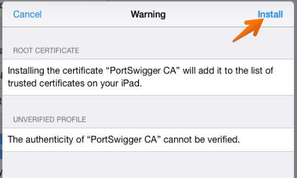
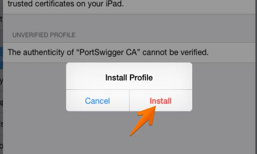

Una volta connessi alla rete si presenta la schermata di accesso, come nei casi precedenti.
Dopo aver eseguito il download del certificato, si presenterà automaticamente la schermata di installazione.
Dopo aver premuto su Installa verrà chiesta una nuova conferma.
Il certificato risulta quindi installato.
Nota: sulle versioni più recenti di IOS è necessario abilitare l’attendibilità completa del certificato, andando nel menu Impostazioni > Generali > Info > Attendibilità certificati.
Attivare quindi il certificato installato agendo sulla relativa linguetta.